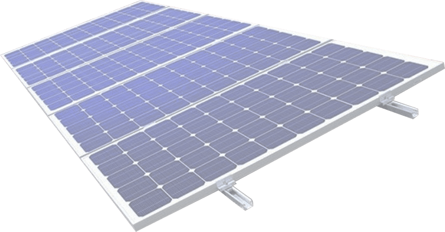

A energia solar funciona através dos painéis que capturam a radiação solar através dos painéis fotovoltaicos onde está radiação é convertida em energia elétrica através de um conversor conectado junto a rede elétrica convencional.
Durante o dia esta energia é coletada e armazenada neste coletor que ao final do dia é utilizada na rede elétrica de sua residência como um gerador, utilizado quando se está sem energia, a posição das placas afetam o potencial de energia adquirida durante o dia, se estiver bem posicionada a energia coletada será melhor e terá um melhor desempenho em questão de duração e em caso de sobra de energia a mesma pode ser enviada para a fornecedora de energia fazendo que ganhe créditos.
Outras questões podem afetar a coleta de energia solar, pela manhã a coleta é menor pois o sol está nascendo e a radiação de luz é menor, já na metade do dia é o momento onde o sol está em seu pico de radiação onde é possível coletar toda a energia para o dia todo onde se sobra energia a qual é creditada. Em dias de chuva ou nublados há também a coleta de energia, mas em pouca quantidade.
O inversor de energia é o equipamento que faz a conversão da energia recebida, ele transforma a energia solar que está em corrente continua CC* e transforma em corrente Alternada CA* após passar pelo inversor a energia pode ser utilizada em qualquer equipamento domestico e em alguns equipamentos industriais.
(“CC” a corrente a qual não tem polaridade normalmente utilizada em circuitos eletrônicos, como notebooks, tvs, impressoras... está rede normalmente é convertida de CA para CC através de uma ponte retificadora)
(“CA” a corrente utilizada para enviar energia elétrica para o consumo residencial, empresarial, pode ser usado para alimentar Chuveiros, fogão, micro-ondas e qualquer outro tipo de equipamento que use esta rede)

A partir das regras criadas pela ANEEL foi o órgão que estabeleceu condições para uso dos geradores de energia e alimentação das redes, a energia é emprestada por outra residência, comercio, empresa ... em Watts essa energia é creditada na conta do gerador após ser utilizado. Esse crédito pode ser usado em até 5 anos deixado a conta de energia mais barata descontando da fatura mensal.
A placa solar em feita de silício (SI) é composta de vários átomos minúsculos que são carregadas com elétrons, mas para gerar energia é necessário que haja dois tipos de silício na placa com cargas positivas e negativas. Para criar o silício Positivo ele é misturado com fosforo, já na criação do silício negativo ele é misturado com boro, essas duas células são colocadas juntas como se fosse um sanduiche para que haja uma reação com o sol e assim a produção de energia.
As células de silício são conectadas uma ao lado da outra através de uma faixa condutora até completar o tamanho de uma placa assim unindo todas as placas colocadas, está serie de placas são cobertas com um vidro temperado, com um tratamento antiaderente e antirreflexo para proteção e emoldurado usando um quadro de alumínio.
Os fótons são os raios de sol que quando chegam na terra e entram em contato com a placa solar atingindo suas células de silício fazem que alguns elétrons (carga Negativa) se desprendam dos átomos, esses elétrons irão percorrer através das células para a parte que houver ausência deles, o espaço é preenchido e o processo continua durante o dia todo o que gera uma corrente elétrica que é chamada de energia solar Fotovoltaica.